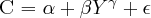

DocBook doesn't define elements for writing mathematical equations. Only few elements exist that tell how equation should be displayed (inlined, block):
inlineequation tells that the equation is
inlined,
informalequation tells that the equation is displayed
as a block, without a title.
equation tells that the equation is displayed as a
block, with or without a title.
These tags include a graphic (graphic or
mediaobject) or an alternative text equation, as shown by
the example.
Example 3.5. Equation taken from TDG
<equation><title>Last Theorem of Fermat</title> <alt>x^n + y^n ≠ z^n ∀ n ≠ 2</alt> <graphic fileref="figures/fermat"></graphic> </equation>
The principle is to use only the alt element. If
initially alt contains actually the text to print, it is
chosen to use this element to embed LaTeX mathematical equations. This choice
has the following advantages:
The translation done by dblatex is really easy, since the equation is already written in LaTeX.
LaTeX is one of the best word processor to render mathematical formulas.
One doesn't need to write the equations in MathML.
This method isn't specific to this tool (see the following section).
Besides, the implementation is as light as possible. This is why it is up to the writer to properly use the mathematical delimiters ($, \(, \), \[, \]). By this way the writer fully controls how he writes equations.
This implementation is not contradictory nor specific. In particular, the DBTeXMath proposal to extend the DSSSL stylesheets used by jade follows the same approach, and is integrated in the Norman Walsh XSL stylesheets.
The following examples show how to write the equations.
Example 3.6. Inlined Equation
The formula  is inlined in the paragraph. Its XML source is:
<para>The formula
<inlineequation id="eg-inlineequation">
<alt>$C = \alpha + \beta Y^{\gamma} + \epsilon$</alt>
<graphic fileref="figures/eq1"/>
</inlineequation>
is inlined in the paragraph. Its XML source is:</para>
Example 3.7. Equation in a block
The following formula:
is displayed in a separate block. The XML source is:
<para>The following formula:
<informalequation>
<alt>\[C = \alpha + \beta Y^{\gamma} + \epsilon\]</alt>
<graphic fileref="figures/eq1"/>
</informalequation>
is displayed in a separate block. The XML source is:</para>
Example 3.8. Equation in a float
The formula Equation 3.1, “Simple Formula” below:
is displayed in a block with a title. Its XML source is:
<?xml version="1.0" encoding="iso-8859-1"?>
<!DOCTYPE para PUBLIC "-//OASIS//DTD DocBook XML V4.4//EN"
"http://www.oasis-open.org/docbook/xml/4.4/docbookx.dtd">
<para>The formula <xref linkend="eq-with-title"/> below:
<equation id="eq-with-title">
<title>Simple Formula</title>
<alt>\[C = \alpha + \beta Y^{\gamma} + \epsilon\]</alt>
<graphic fileref="figures/eq1"/>
</equation>
is displayed in a block with a title. Its XML source is:</para>
Example 3.9. Equation without a title
The formula Equation 3.1, “” below:
is displayed as a latex equation with its own equation numbering.
Its XML source is:
<?xml version="1.0" encoding="iso-8859-1"?>
<!DOCTYPE para PUBLIC "-//OASIS//DTD DocBook XML V4.4//EN"
"http://www.oasis-open.org/docbook/xml/4.4/docbookx.dtd">
<para>The formula <xref linkend="eq-with-no-title"/> below:
<equation id="eq-with-no-title">
<alt>C = \alpha + \beta Y^{\gamma} + \epsilon</alt>
<graphic fileref="figures/eq4"/>
</equation>
is displayed as a latex equation with its own equation numbering.
Its XML source is:</para>
You can write MathML equations in a DocBook based document, by using the MathML Module for DocBook XML instead of the DocBook DTD.
dblatex now translates the MathML equations to latex by using the excellent stylesheets of the XSLT MathML Library by Vasil Yaroshevich. A large amount of tests from the W3C MathML Test Suite 2.0 is supported (657 of 712 tests). The test file used to validate the MathML stylesheets is provided in the package.